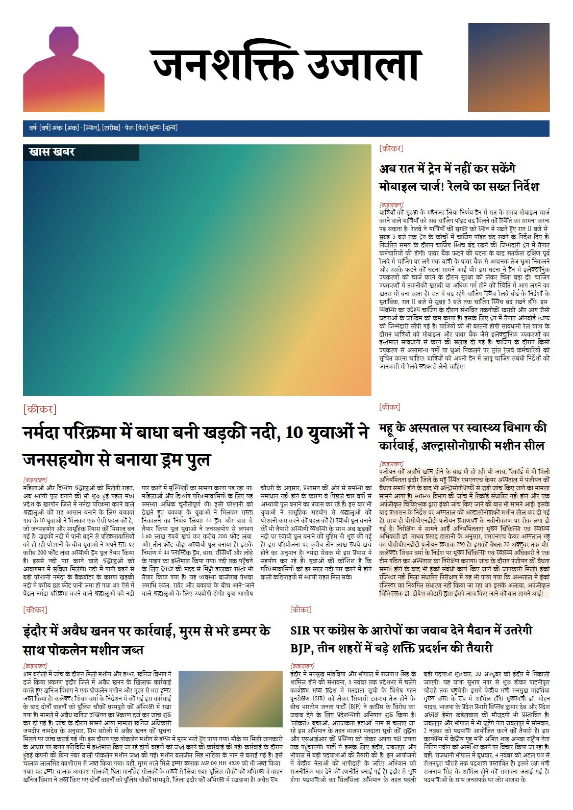
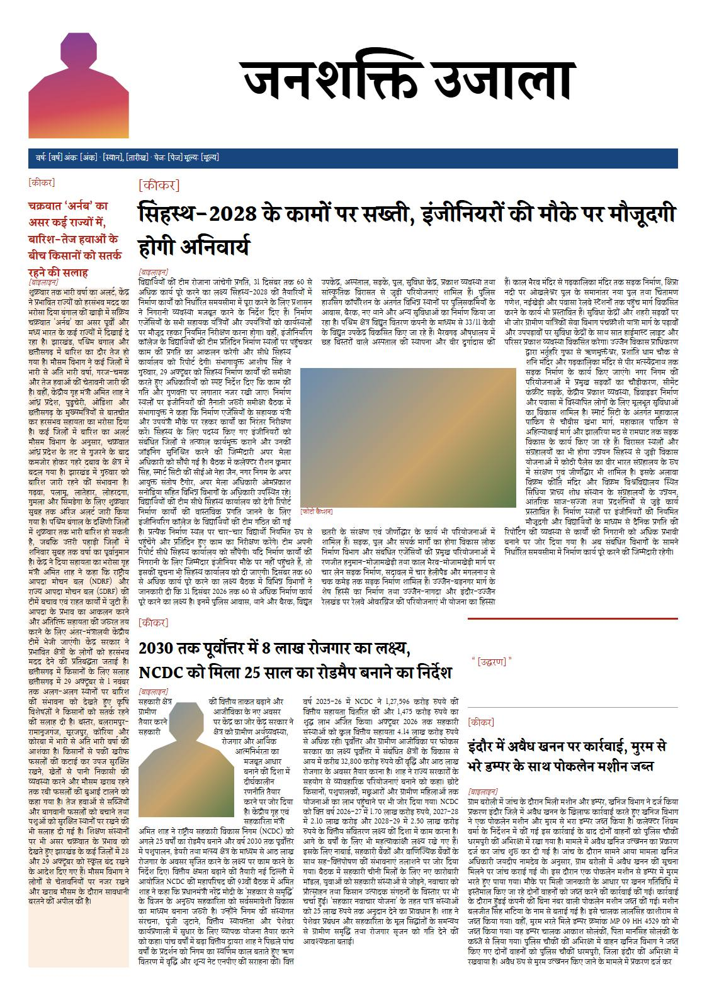
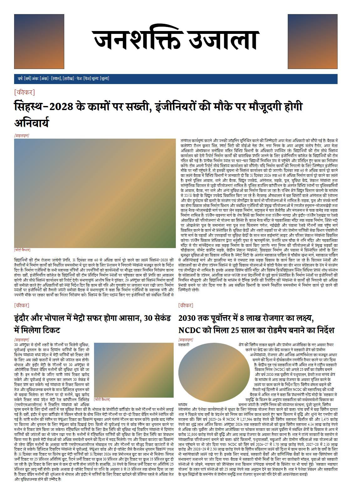
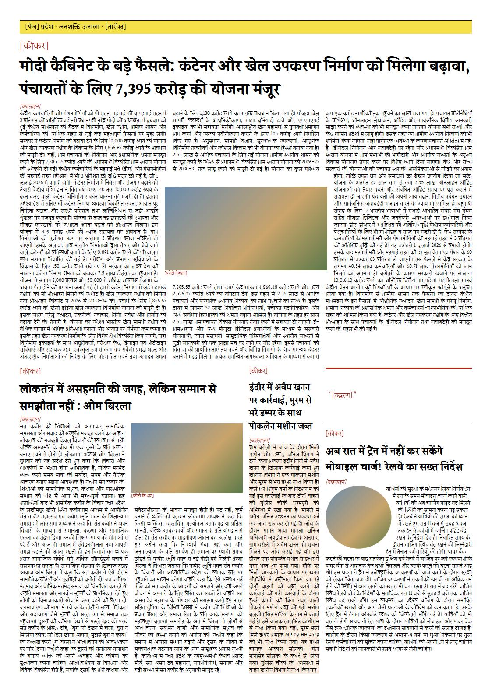
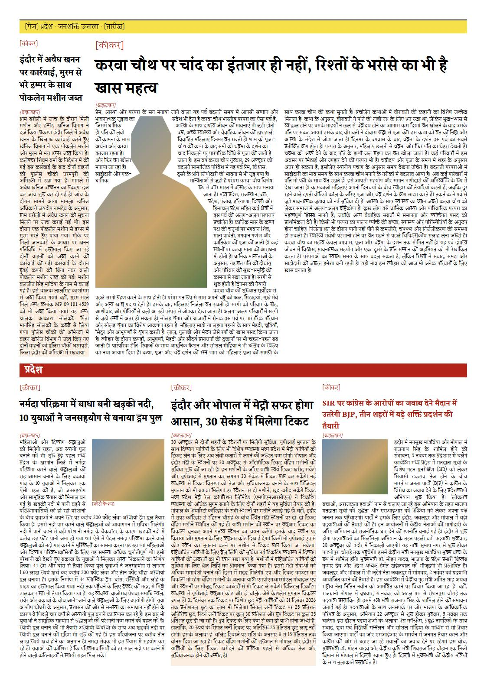
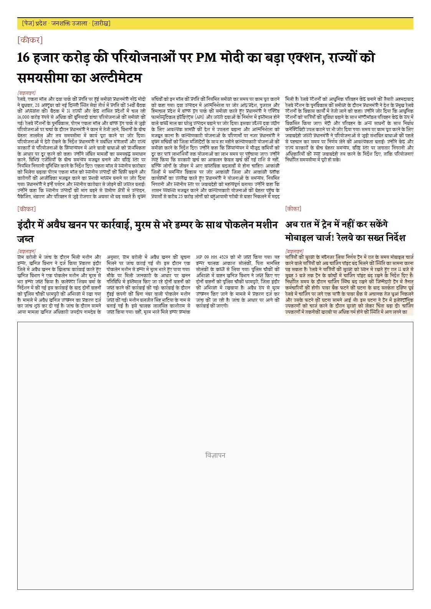
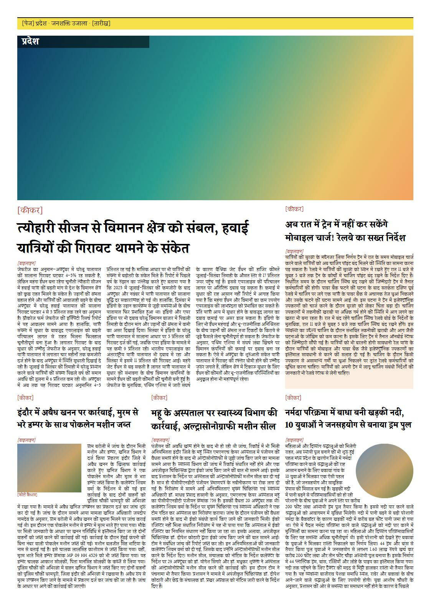
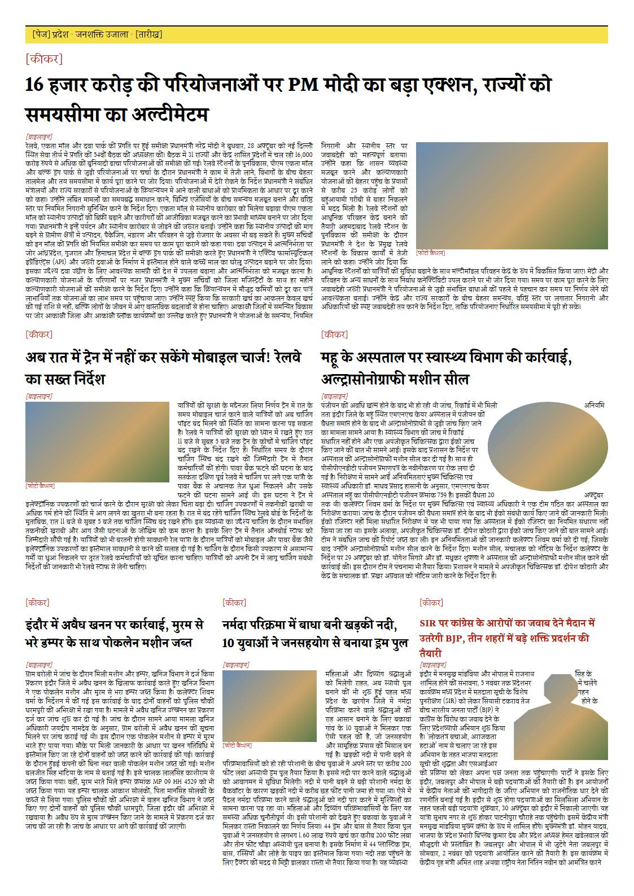
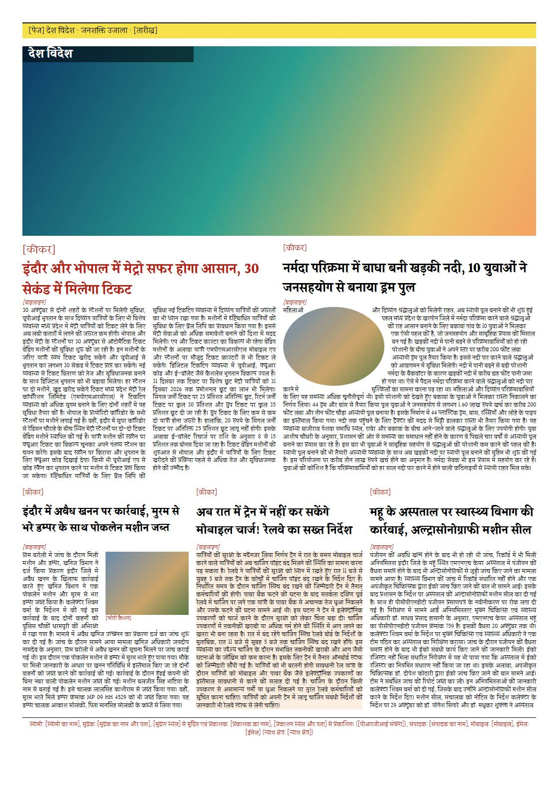
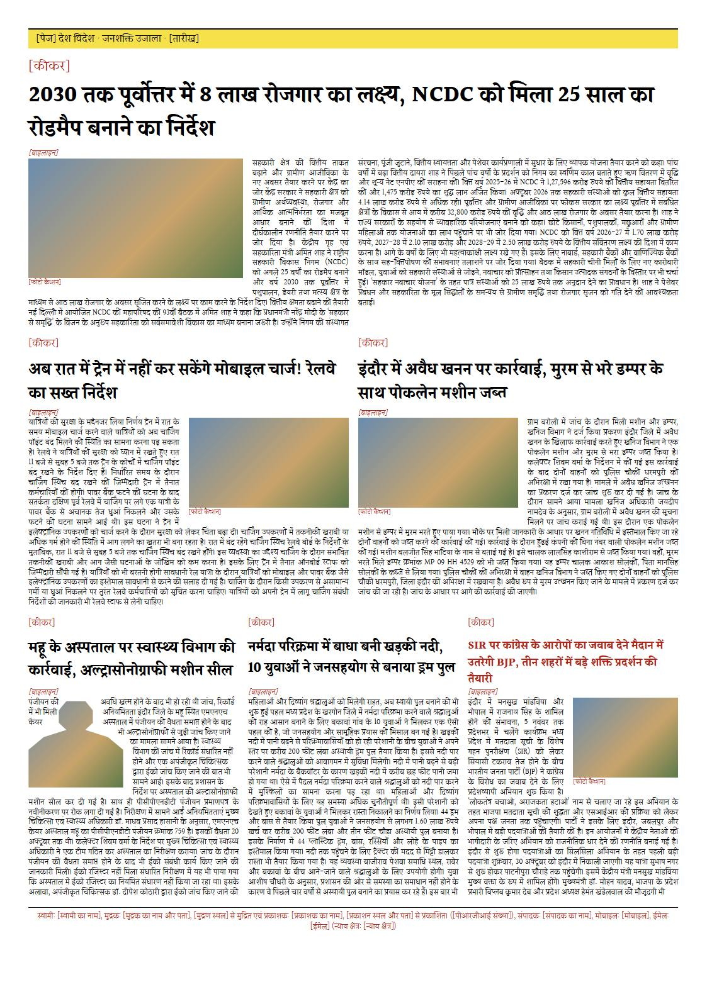

Fonts: Khand + Noto Sans · Noto Sans · Noto Serif · Eczar + Noto Serif · Halant
This page: headlines Halant 700, body Halant 400. Halant is not a launch font and no gate runs on it (D-052). Its bold had a CAVEAT on halant breaks, at 98.8% (D-048).
Across these 46 story slots, 5 headlines fit at no size, and the average headline size is 25.9 px. Body leading is 1.32 em and this font's ink is 1.34 em tall, so body lines can touch at this size.
Page structure comes from Janshakti's printed pages. The variety comes from studying how another daily lays out its pages: layout patterns only, none of its content or images. Patterns used: a big photo across the top with the section name on it, cut-outs beside the masthead and in stories with text following the outline, photos left, right, round and in the middle of the text, tinted panels, quotes, side rails, section bands, a half-page ad, and small classified ads.
The grid is assumed (A3, 6 columns, GG-007). Red text marks placeholders: print line, kicker, byline, caption, quote, and the issue details. Photos and ads are empty colour boxes, cut-outs are a stand-in head-and-shoulders outline until real images bring their own, and there is no real logo. The colours only echo the printed pages and are not decided for print.
On each page, each story slot holds a different real story from Janshakti's site, uncut; stories can repeat between pages, since the pool is 24. A simple greedy pass made only for this demo gives each slot the unused story that fits best. It is not the auto-pager. Paragraphs are joined, so real pages will run slightly longer.
Headlines are never clipped. Line spacing comes from each font's measured ink, and the size steps down until the headline fits. The table shows the size used; a headline that fits at no size turns red and says so. A one-line headline still leaves space below it, because the text does not rise yet.
Over counts lines of text that did not fit, at the frame's column width. Under counts empty line places left in the frame after the story ends. A short last line counts as used, so Under never counts part of a line, and it is 0 whenever anything is over. It counts body lines only.

| Story slot | Story | Characters | Priority | Headline | Text columns | Fill | Over | Under |
|---|---|---|---|---|---|---|---|---|
| lead | s4: नर्मदा परिक्रमा में बाधा बनी खड़की नदी, 10 युवाओं ने जनसहयोग से बनाया ड्रम पुल | 1826 | 1 | 36 px | 3 | 95.2% | 0 | 2 |
| side-a | s16: अब रात में ट्रेन में नहीं कर सकेंगे मोबाइल चार्ज! रेलवे का सख्त निर्देश | 1431 | 2 | 24 px | 1 | 87% | 0 | 3 |
| foot-a | s6: इंदौर में अवैध खनन पर कार्रवाई, मुरम से भरे डम्पर के साथ पोकलेन मशीन जब्त | 1240 | 2 | 26 px | 1 | 114.3% | 2 | 0 |
| side-b | s8: महू के अस्पताल पर स्वास्थ्य विभाग की कार्रवाई, अल्ट्रासोनोग्राफी मशीन सील | 1636 | 3 | 24 px | 1 | 150% | 8 | 0 |
| foot-b | s7: SIR पर कांग्रेस के आरोपों का जवाब देने मैदान में उतरेगी BJP, तीन शहरों में बड़े शक्ति प्रदर्शन की तैयारी | 2019 | 3 | 24 px | 2 | 139.3% | 11 | 0 |

| Story slot | Story | Characters | Priority | Headline | Text columns | Fill | Over | Under |
|---|---|---|---|---|---|---|---|---|
| lead | s5: सिंहस्थ-2028 के कामों पर सख्ती, इंजीनियरों की मौके पर मौजूदगी होगी अनिवार्य | 4285 | 1 | 36 px | 3 | 93.8% | 0 | 5 |
| below | s2: 2030 तक पूर्वोत्तर में 8 लाख रोजगार का लक्ष्य, NCDC को मिला 25 साल का रोडमैप बनाने का निर्देश | 2325 | 2 | 26 px | 2 | 96.6% | 0 | 2 |
| rail | s11: चक्रवात ‘अर्नब’ का असर कई राज्यों में, बारिश-तेज हवाओं के बीच किसानों को सतर्क रहने की सलाह | 2063 | 3 | 18 px, does not fit | 1 | 91.2% | 0 | 6 |
| side | s6: इंदौर में अवैध खनन पर कार्रवाई, मुरम से भरे डम्पर के साथ पोकलेन मशीन जब्त | 1240 | 3 | 22 px | 1 | 105.9% | 1 | 0 |

| Story slot | Story | Characters | Priority | Headline | Text columns | Fill | Over | Under |
|---|---|---|---|---|---|---|---|---|
| lead | s5: सिंहस्थ-2028 के कामों पर सख्ती, इंजीनियरों की मौके पर मौजूदगी होगी अनिवार्य | 4285 | 1 | 36 px | 2 | 97.5% | 0 | 1 |
| left | s19: इंदौर और भोपाल में मेट्रो सफर होगा आसान, 30 सेकंड में मिलेगा टिकट | 2263 | 2 | 26 px | 1 | 100% | 0 | 0 |
| right | s2: 2030 तक पूर्वोत्तर में 8 लाख रोजगार का लक्ष्य, NCDC को मिला 25 साल का रोडमैप बनाने का निर्देश | 2325 | 2 | 26 px | 1 | 96.7% | 0 | 1 |

| Story slot | Story | Characters | Priority | Headline | Text columns | Fill | Over | Under |
|---|---|---|---|---|---|---|---|---|
| top | s21: मोदी कैबिनेट के बड़े फैसले: कंटेनर और खेल उपकरण निर्माण को मिलेगा बढ़ावा, पंचायतों के लिए 7,395 करोड़ की योजना मंजूर | 6070 | 1 | 36 px | 3 | 95.7% | 0 | 4 |
| below | s14: लोकतंत्र में असहमति की जगह, लेकिन सम्मान से समझौता नहीं : ओम बिरला | 3057 | 2 | 26 px | 2 | 100% | 0 | 0 |
| rail | s6: इंदौर में अवैध खनन पर कार्रवाई, मुरम से भरे डम्पर के साथ पोकलेन मशीन जब्त | 1240 | 3 | 20 px | 1 | 118.2% | 6 | 0 |
| side | s16: अब रात में ट्रेन में नहीं कर सकेंगे मोबाइल चार्ज! रेलवे का सख्त निर्देश | 1431 | 3 | 24 px | 1 | 88.9% | 0 | 3 |

| Story slot | Story | Characters | Priority | Headline | Text columns | Fill | Over | Under |
|---|---|---|---|---|---|---|---|---|
| lead | s17: करवा चौथ पर चांद का इंतजार ही नहीं, रिश्तों के भरोसे का भी है खास महत्व | 4165 | 1 | 36 px | 2 | 85.4% | 0 | 12 |
| third-a | s4: नर्मदा परिक्रमा में बाधा बनी खड़की नदी, 10 युवाओं ने जनसहयोग से बनाया ड्रम पुल | 1826 | 2 | 22 px | 1 | 97% | 0 | 1 |
| third-b | s19: इंदौर और भोपाल में मेट्रो सफर होगा आसान, 30 सेकंड में मिलेगा टिकट | 2263 | 2 | 26 px | 1 | 97% | 0 | 1 |
| rail | s6: इंदौर में अवैध खनन पर कार्रवाई, मुरम से भरे डम्पर के साथ पोकलेन मशीन जब्त | 1240 | 3 | 20 px | 1 | 111.4% | 4 | 0 |
| third-c | s7: SIR पर कांग्रेस के आरोपों का जवाब देने मैदान में उतरेगी BJP, तीन शहरों में बड़े शक्ति प्रदर्शन की तैयारी | 2019 | 3 | 18 px, does not fit | 1 | 100% | 0 | 0 |

| Story slot | Story | Characters | Priority | Headline | Text columns | Fill | Over | Under |
|---|---|---|---|---|---|---|---|---|
| top | s15: 16 हजार करोड़ की परियोजनाओं पर PM मोदी का बड़ा एक्शन, राज्यों को समयसीमा का अल्टीमेटम | 3228 | 1 | 36 px | 3 | 88.2% | 0 | 6 |
| left | s6: इंदौर में अवैध खनन पर कार्रवाई, मुरम से भरे डम्पर के साथ पोकलेन मशीन जब्त | 1240 | 2 | 26 px | 3 | 96.7% | 0 | 1 |
| right | s16: अब रात में ट्रेन में नहीं कर सकेंगे मोबाइल चार्ज! रेलवे का सख्त निर्देश | 1431 | 3 | 24 px | 1 | 200% | 10 | 0 |

| Story slot | Story | Characters | Priority | Headline | Text columns | Fill | Over | Under |
|---|---|---|---|---|---|---|---|---|
| top | s10: त्योहारी सीजन से विमानन क्षेत्र को संबल, हवाई यात्रियों की गिरावट थामने के संकेत | 2720 | 1 | 36 px | 3 | 98.3% | 0 | 1 |
| side | s16: अब रात में ट्रेन में नहीं कर सकेंगे मोबाइल चार्ज! रेलवे का सख्त निर्देश | 1431 | 2 | 24 px | 1 | 90.9% | 0 | 2 |
| third-a | s6: इंदौर में अवैध खनन पर कार्रवाई, मुरम से भरे डम्पर के साथ पोकलेन मशीन जब्त | 1240 | 3 | 22 px | 1 | 100% | 0 | 0 |
| third-b | s8: महू के अस्पताल पर स्वास्थ्य विभाग की कार्रवाई, अल्ट्रासोनोग्राफी मशीन सील | 1636 | 3 | 24 px | 1 | 100% | 0 | 0 |
| third-c | s4: नर्मदा परिक्रमा में बाधा बनी खड़की नदी, 10 युवाओं ने जनसहयोग से बनाया ड्रम पुल | 1826 | 3 | 22 px | 1 | 129.2% | 7 | 0 |

| Story slot | Story | Characters | Priority | Headline | Text columns | Fill | Over | Under |
|---|---|---|---|---|---|---|---|---|
| top | s15: 16 हजार करोड़ की परियोजनाओं पर PM मोदी का बड़ा एक्शन, राज्यों को समयसीमा का अल्टीमेटम | 3228 | 1 | 36 px | 2 | 97.5% | 0 | 1 |
| half-a | s16: अब रात में ट्रेन में नहीं कर सकेंगे मोबाइल चार्ज! रेलवे का सख्त निर्देश | 1431 | 2 | 26 px | 1 | 90.5% | 0 | 2 |
| half-b | s8: महू के अस्पताल पर स्वास्थ्य विभाग की कार्रवाई, अल्ट्रासोनोग्राफी मशीन सील | 1636 | 2 | 26 px | 1 | 95.7% | 0 | 1 |
| third-a | s6: इंदौर में अवैध खनन पर कार्रवाई, मुरम से भरे डम्पर के साथ पोकलेन मशीन जब्त | 1240 | 3 | 22 px | 1 | 81.8% | 0 | 4 |
| third-b | s4: नर्मदा परिक्रमा में बाधा बनी खड़की नदी, 10 युवाओं ने जनसहयोग से बनाया ड्रम पुल | 1826 | 3 | 22 px | 1 | 145.5% | 10 | 0 |
| third-c | s7: SIR पर कांग्रेस के आरोपों का जवाब देने मैदान में उतरेगी BJP, तीन शहरों में बड़े शक्ति प्रदर्शन की तैयारी | 2019 | 3 | 18 px, does not fit | 1 | 142.3% | 11 | 0 |

| Story slot | Story | Characters | Priority | Headline | Text columns | Fill | Over | Under |
|---|---|---|---|---|---|---|---|---|
| half-a | s19: इंदौर और भोपाल में मेट्रो सफर होगा आसान, 30 सेकंड में मिलेगा टिकट | 2263 | 1 | 28 px, does not fit | 2 | 97.7% | 0 | 1 |
| half-b | s4: नर्मदा परिक्रमा में बाधा बनी खड़की नदी, 10 युवाओं ने जनसहयोग से बनाया ड्रम पुल | 1826 | 2 | 26 px | 1 | 95.8% | 0 | 1 |
| third-a | s6: इंदौर में अवैध खनन पर कार्रवाई, मुरम से भरे डम्पर के साथ पोकलेन मशीन जब्त | 1240 | 3 | 22 px | 1 | 120% | 4 | 0 |
| third-b | s16: अब रात में ट्रेन में नहीं कर सकेंगे मोबाइल चार्ज! रेलवे का सख्त निर्देश | 1431 | 3 | 24 px | 1 | 100% | 0 | 0 |
| third-c | s8: महू के अस्पताल पर स्वास्थ्य विभाग की कार्रवाई, अल्ट्रासोनोग्राफी मशीन सील | 1636 | 3 | 24 px | 1 | 120% | 4 | 0 |

| Story slot | Story | Characters | Priority | Headline | Text columns | Fill | Over | Under |
|---|---|---|---|---|---|---|---|---|
| top | s2: 2030 तक पूर्वोत्तर में 8 लाख रोजगार का लक्ष्य, NCDC को मिला 25 साल का रोडमैप बनाने का निर्देश | 2325 | 1 | 36 px | 2 | 94.1% | 0 | 2 |
| half-a | s16: अब रात में ट्रेन में नहीं कर सकेंगे मोबाइल चार्ज! रेलवे का सख्त निर्देश | 1431 | 2 | 26 px | 1 | 100% | 0 | 0 |
| half-b | s6: इंदौर में अवैध खनन पर कार्रवाई, मुरम से भरे डम्पर के साथ पोकलेन मशीन जब्त | 1240 | 2 | 26 px | 1 | 94.7% | 0 | 1 |
| third-a | s8: महू के अस्पताल पर स्वास्थ्य विभाग की कार्रवाई, अल्ट्रासोनोग्राफी मशीन सील | 1636 | 3 | 24 px | 1 | 134.8% | 8 | 0 |
| third-b | s4: नर्मदा परिक्रमा में बाधा बनी खड़की नदी, 10 युवाओं ने जनसहयोग से बनाया ड्रम पुल | 1826 | 3 | 22 px | 1 | 130% | 6 | 0 |
| third-c | s7: SIR पर कांग्रेस के आरोपों का जवाब देने मैदान में उतरेगी BJP, तीन शहरों में बड़े शक्ति प्रदर्शन की तैयारी | 2019 | 3 | 18 px, does not fit | 1 | 170% | 14 | 0 |
Rebuild: node scripts/demo-templates.mjs.